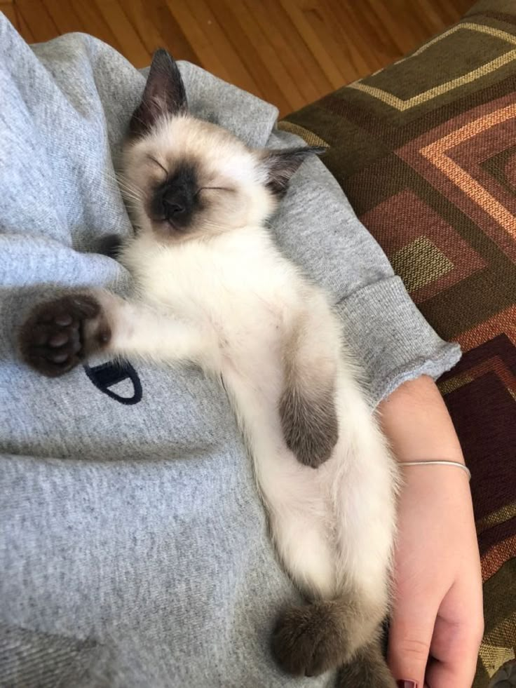
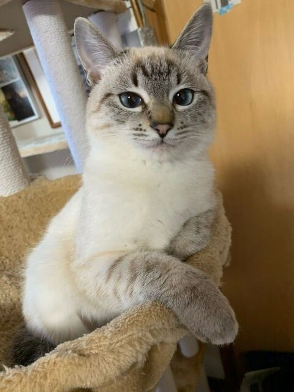
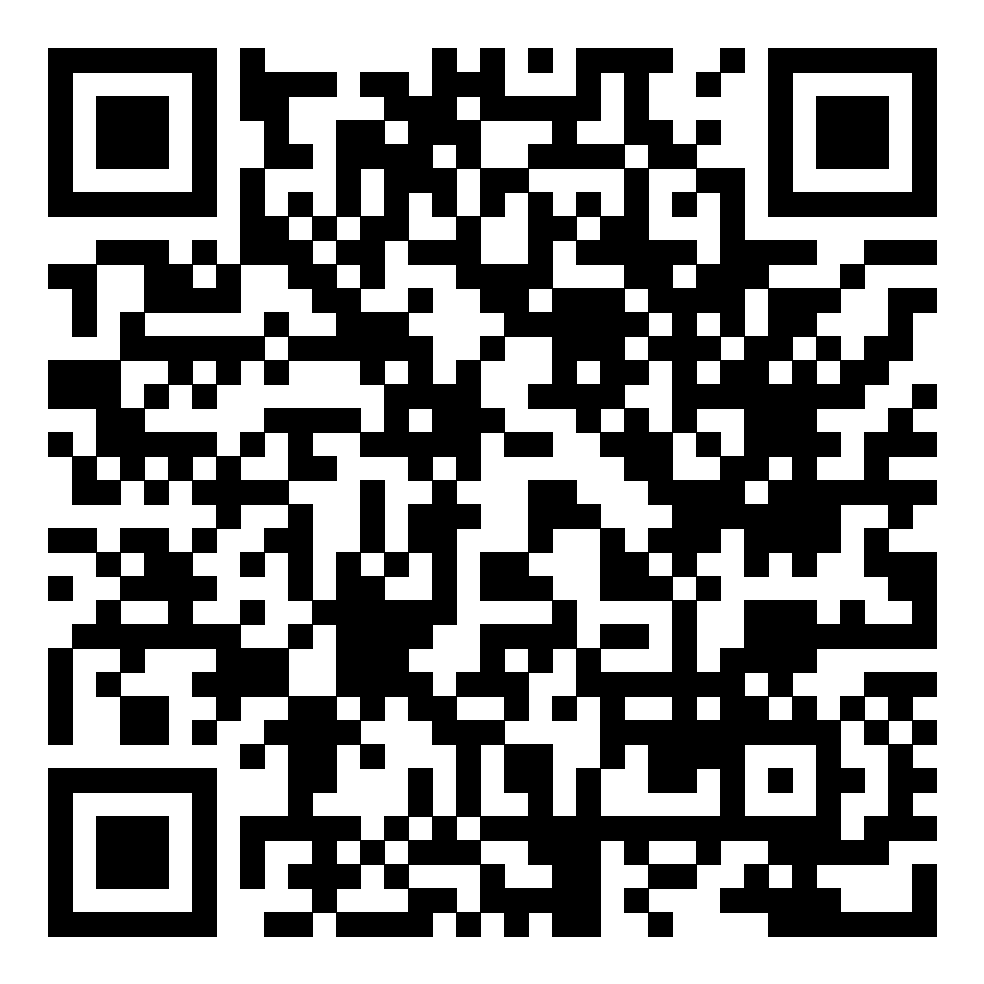

GATOS
Nós somos a Adopt uma ONG brasileira fundada em 2004, podemos te ajudar a adotar um novo amigo ou a encontrar um novo lar para o seu pet

GATOS

CACHORROS

PÁSSAROS

OUTROS




Banco Itaú - Agência: 3213 - Conta corrente: 2900990390
Nossa chave Pix no CNPJ: 55644466646464
ou escaneio o QR code abaixo:

Infelizmente não podemos divulgar nosso endereço publicamente.
Uma medida tomada para evitar abandonos na porta o que dificultaria nosso trabalho.
Porém visitas são bem-vindas mediante a um agendamento por email ou telefone:
Email: ongadopt@gmail.com
Telefone: (11) 93543-8864